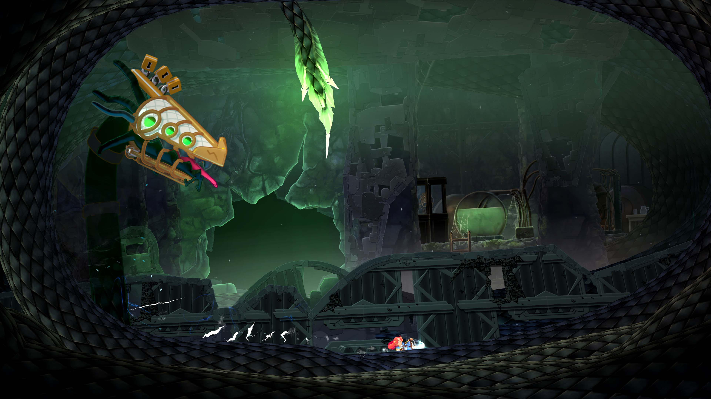
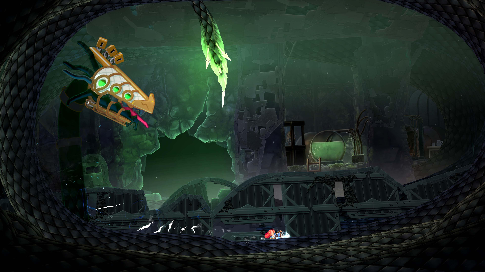

Game Designer / Level Designer
Lumina, a young Teslamancer, finds herself stranded after her airship crash lands in Wyrmheim, a remote and treacherous land to the North. Embark on a dangerous adventure, exploring a gigantic, abandoned tower looming over a fjordside valley, on a quest to get Lumina home and back to her family.
I had the pleasure of working on Teslagrad 2 as my first project with Rain Games in Bergen. I jumped aboard the team and did a lot of different tasks during the project. From iterating and designing levels, boss fights, mechanics, and challenges. To filling in the team lead role, where I made plans and kept track of production for a period of time.

My first task on the team was to design levels for a whole new section of the game. And during my time working on the project I probably visited all of the levels and either: iterated, polished, or remade them.

 
